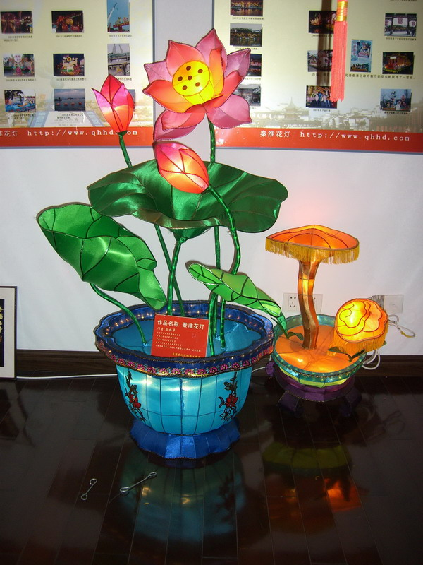
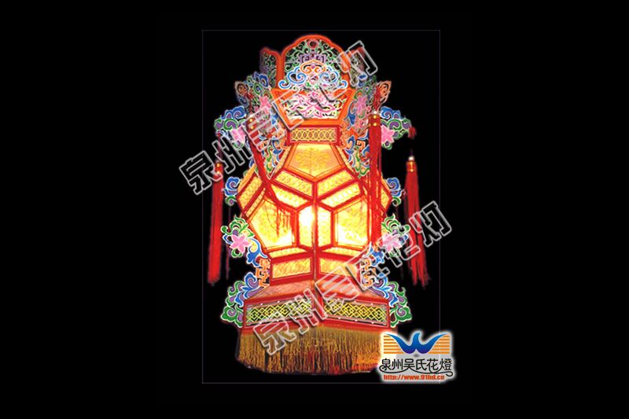
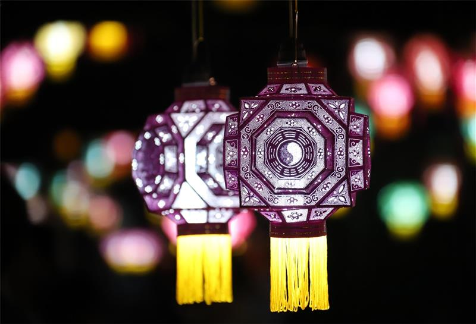
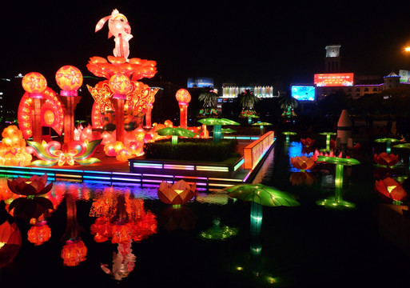

四大地域名灯解析

秦淮灯彩：六朝古都的市井烟火
秦淮灯彩主要流传于江苏南京，是中国灯彩艺术的重要代表。其历史可追溯至东吴时期，明代达到鼎盛。秦淮灯彩的材料多就地取材，以竹篾、芦苇、铁丝为骨架，表面糊以绵纸、透明纸或丝绸。在制作工艺上，综合了木工、漆工、彩绘、剪纸等多种技法。
最著名的代表作是“荷花灯”。秦淮荷花灯做工极其讲究，一盏上乘的荷花灯需经过六十多道工序，花瓣边缘需经过特殊的“压烫”处理，使其呈现出自然舒展的弧度，并在花瓣上用脂胭红点染，色彩过渡自然、艳而不俗。除了荷花灯，狮子灯、兔子灯、蛤蟆灯也是老南京人春节必不可少的民俗记忆。

泉州花灯：刺桐港的绝世精工
福建泉州花灯起于唐代，盛于宋元，是南方花灯的杰出代表。泉州花灯最令人叹为观止的绝技在于“刻纸”与“料丝”。传统的刻纸灯不需要骨架，全凭艺人在厚纸板上用刻刀雕镂出极其繁复的几何纹或花鸟图案，然后将各片纸板拼凑成多面体的灯身。
一代宗师李尧宝先生在刻纸灯的基础上，创制了“刻纸料丝灯”。在镂空的图案内镶嵌用玻璃丝排列成的“料丝”，光源亮起时，光线折射在玻璃丝上，呈现出晶莹剔透、璀璨夺目的华丽效果，被誉为中国花灯艺术中的稀世珍品。

仙居针刺无骨花灯：万孔透光的中华一绝
浙江仙居针刺无骨花灯，相传始于唐代，俗称“唐灯”。其最大的特点是“通身不用一根骨架”，并且“以针刺孔成像”。制作时，将纸张按照设计图纸裁剪成多边形灯片，艺人手持绣花针，在纸片上密密麻麻地刺出图案纹理。
一盏普通的仙居花灯，纸片上的针孔少则十几万，多则几百万。组装时利用纸张的张力与特殊的胶水，将数十片刺好图案的灯片直接粘接成立体结构。点燃内部光源后，光线穿透数以万计的微孔，形成如梦似幻的光影效果，犹如夜空中繁星闪烁，极具空间感与审美价值。

潮州花灯：立体的潮剧舞台
潮州花灯是广东潮汕地区的国家级非物质文化遗产。与其他以植物、动物或几何造型为主的花灯不同，潮州花灯最突出的成就是“人物屏灯”。它将泥塑、彩绘、纸扎、潮绣等工艺融为一体。
潮州花灯艺人被称为“灯师”，他们不仅精通扎作，更要懂得戏曲与历史。屏灯中的人物头部通常用泥塑成型并开脸彩绘，身体则用铁丝扎成骨架，穿上按比例微缩的潮绣戏服。配以亭台楼阁、假山树木作为背景。灯光亮起，一盏大型花灯便是一出静止的潮剧大戏，生旦净末丑，神态各异，栩栩如生。